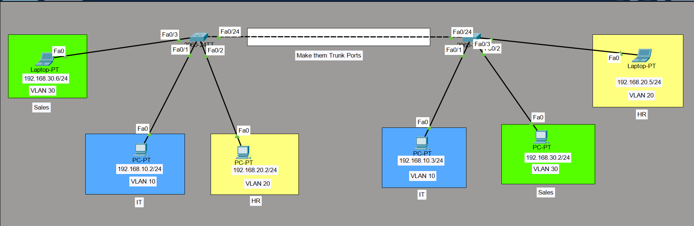
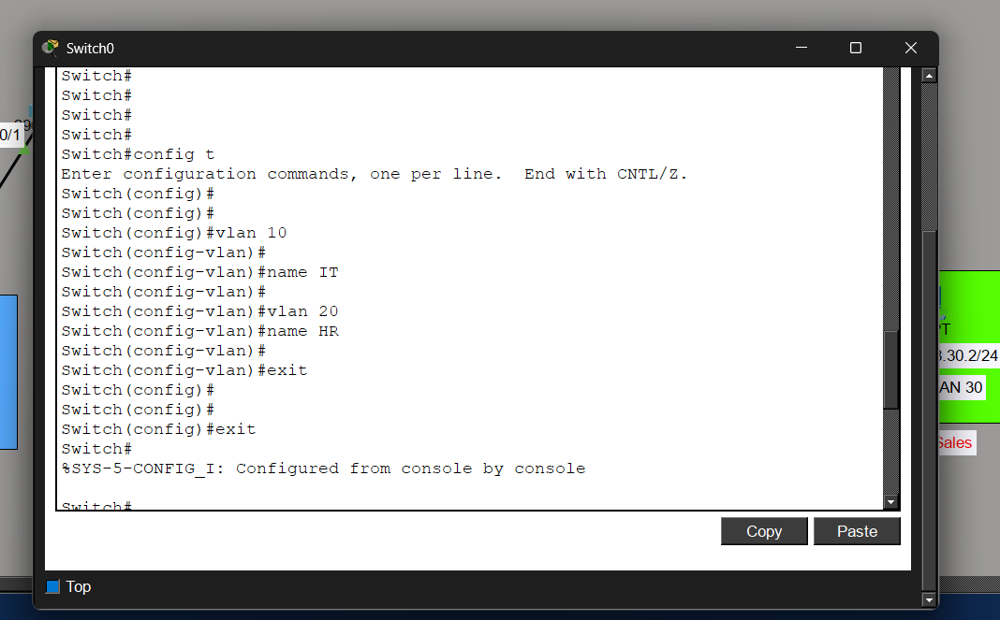
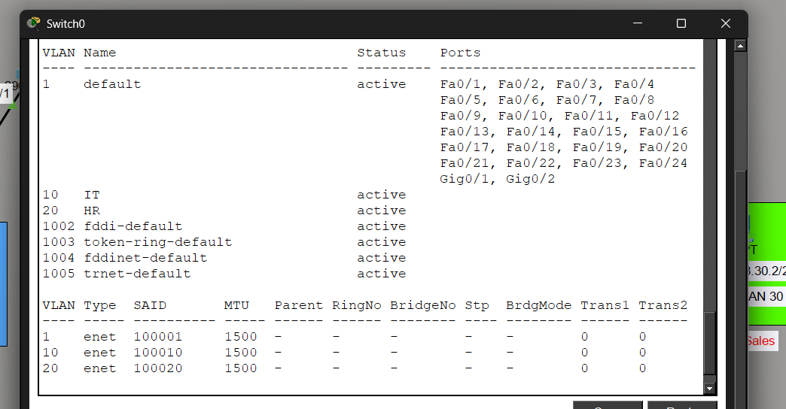
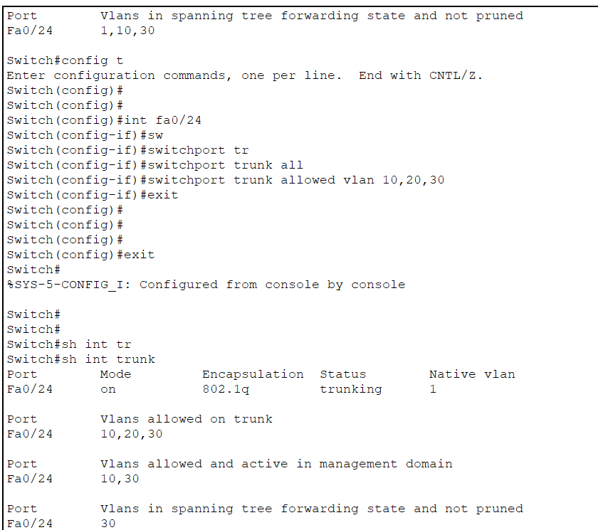
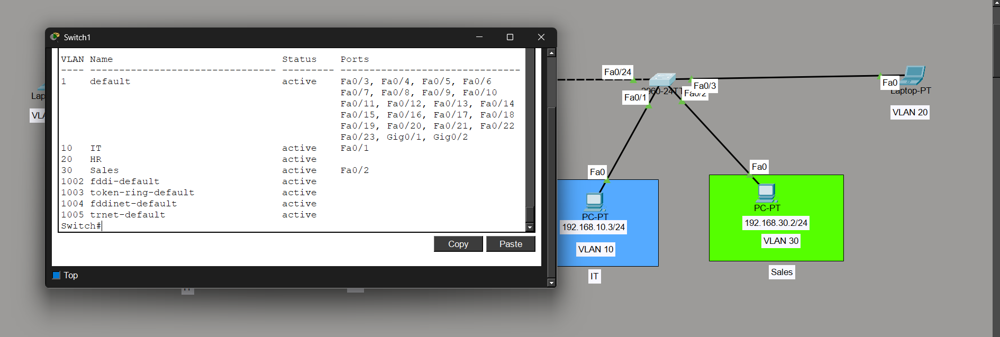
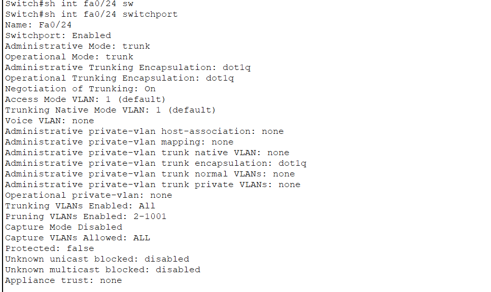
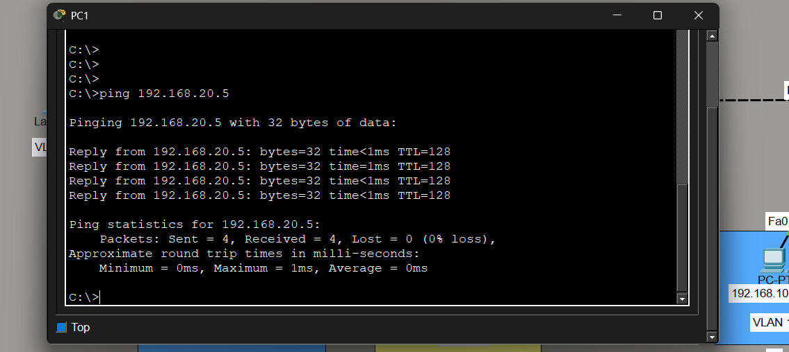
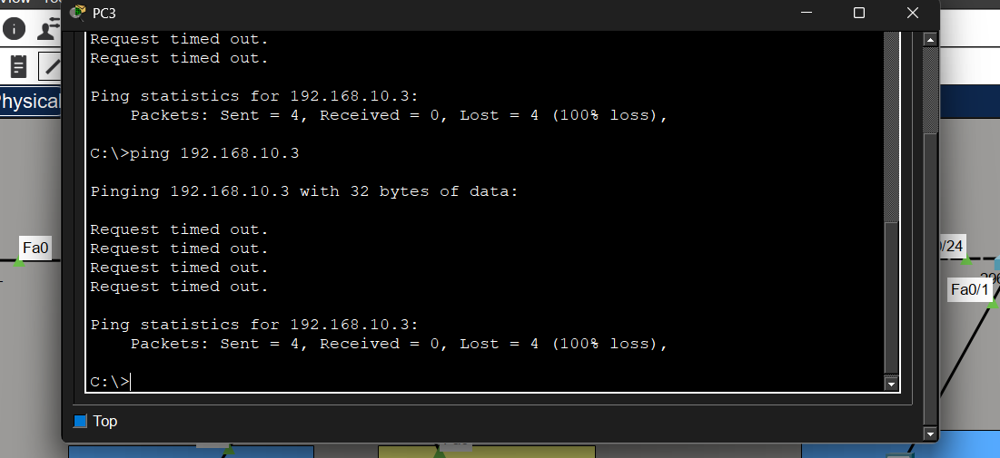

← Back to Networking Labs
🌐 VLAN Trunking Lab
A practical Cisco Packet Tracer lab focused on VLAN segmentation and trunking between multiple switches using 802.1Q trunking.
This project demonstrates how enterprise networks isolate departments using VLANs while allowing same-VLAN communication across switches.
🎯 Objective
The goal of this lab was to understand how VLANs work, configure trunk links between switches, and observe how Layer 2 segmentation controls communication between devices.
⚙️ Topology Summary
- 2 Cisco switches connected via trunk link
- 6 End devices (PCs & Laptops)
- 3 VLANs configured across the network
- Fa0/24 used as trunk interface between switches
🧱 VLAN Structure
- VLAN 10 → IT (192.168.10.x)
- VLAN 20 → HR (192.168.20.x)
- VLAN 30 → SALES (192.168.30.x)
🛠️ VLAN Creation
vlan 10
name IT
vlan 20
name HR
vlan 30
name SALES
🔌 Access Port Configuration
interface fa0/1
switchport mode access
switchport access vlan 10
interface fa0/2
switchport mode access
switchport access vlan 20
interface fa0/3
switchport mode access
switchport access vlan 30
🔗 Trunk Configuration
interface fa0/24
switchport mode trunk
switchport trunk allowed vlan 10,20,30
✅ Testing Results
Successful Communication
- Devices within the same VLAN communicated successfully across switches
- Example: VLAN 10 → 192.168.10.2 ↔ 192.168.10.3 ✔
Blocked Communication (Expected)
- VLAN 10 ✖ VLAN 20
- VLAN 10 ✖ VLAN 30
- VLAN 20 ✖ VLAN 30
🧠 Key Learnings
- VLANs isolate networks at Layer 2
- Trunk ports carry multiple VLANs using 802.1Q tagging
- Access ports belong to a single VLAN
- Same VLAN devices communicate even across switches
- Different VLANs require Layer 3 routing for communication
💡 Important Insight
Even after correct VLAN and trunk configuration, devices in different VLANs cannot communicate directly.
This behavior is expected and requires Inter-VLAN Routing using a router or Layer 3 switch.
🧰 Technologies Used
Cisco Packet Tracer
VLANs
802.1Q Trunking
Networking
Switching
TCP/IP
Cisco IOS
📸 Lab Screenshots

Complete VLAN topology created in Cisco Packet Tracer with multiple switches, VLAN segmentation, and trunk connectivity.

Configured VLAN assignment for different departments including IT, HR, and SALES using Cisco IOS commands.

Verified VLAN creation and active VLAN membership using VLAN status commands.

Configured 802.1Q trunking between switches to allow VLAN traffic across the network.

Assigned switch interfaces to specific VLANs using access port configuration.

Verified interface configuration and VLAN association using interface brief commands.

Successful communication between devices inside the same VLAN across multiple switches.

Communication blocked between different VLANs demonstrating proper Layer 2 segmentation.
🌍 Real-World Use Cases
VLAN segmentation is widely used in enterprise networks, campus networks, and data centers where multiple departments require isolation while sharing the same physical infrastructure.
🚀 View Full Project on GitHub
You can view the complete lab setup, configurations, and screenshots on GitHub.
🚀 View on GitHub
✅ Conclusion
This lab strengthened my understanding of VLAN implementation, trunking concepts, and network segmentation while demonstrating how enterprise switches manage communication across multiple VLANs.